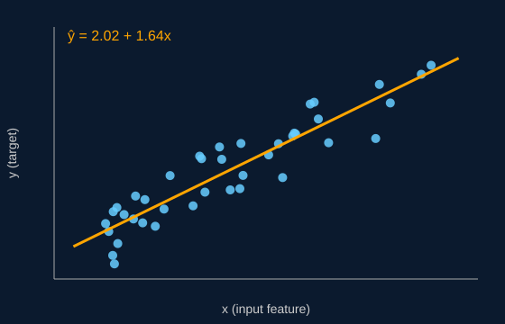

What is Linear Regression?
Linear regression is one of the oldest and most widely used techniques in statistics and machine learning. It models the relationship between an input variable (or several) and a numeric output by fitting a straight line through the observed data.
Once the line is found, it can be used to explain how strongly the output depends on the input and to predict the output for new inputs the model has never seen.
The Core Idea
In its simplest form, called simple linear regression, there is one input x and one output y. The model assumes:
y = β0 + β1x + ε
Here β0 is the intercept (the predicted value of y when x is zero), β1 is the slope (how much y changes when x increases by one unit), and ε is random error the line cannot explain. When there are several inputs, the same idea extends to multiple linear regression, where each input gets its own slope coefficient.
Key Terms
- Dependent variable (response)
- The quantity being predicted, such as a house price.
- Independent variable (feature)
- The input used to make the prediction, such as square footage.
- Coefficients
- The intercept and slope values that the algorithm learns from the data.
- Residual
- The gap between an actual observed value and the value the line predicts.
Why It Matters in Computer Science
Linear regression is usually the first supervised learning algorithm taught in machine learning courses because it is simple, fast, and easy to interpret. It is used for forecasting sales, estimating software project effort, predicting server load, and as a baseline that more complex models such as neural networks must beat. Explore the other pages to see how the line is calculated, when the model can be trusted, and how to build one in Python.